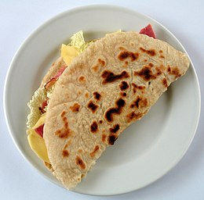

Homepage
Piadina Romagnola Classica

Description
The Piadina Romagnola is a traditional Italian flatbread from the Romagna region. It is made with flour, water, lard (or olive oil), salt, and sometimes baking soda, then cooked on a hot griddle or pan.
Soft yet slightly crispy, it is typically filled with cold cuts, cheese (like squacquerone), or vegetables. Simple yet delicious, the piadina is a staple of Romagna’s street food and cuisine.
Ingredients for 1 Piadina
- one plain piadina(bought at the mall or homemade).
- one pack of prosciutto cotto, crudo or whatever cold cuts you prefer.
- one pack of squaquerone, alternatively you can use certosa.
- (optional) a vegetable of your choice
- (optional) a sauce of your choice
Steps
- Cook and fill the piadina
- Heat a griddle or non-stick pan over medium heat and cook the piadina for about 2-3 minutes on each side, until lightly golden.
- After cooking the piadina, spread a generous layer of squacquerone cheese on the inner side.
- Add slices of prosciutto cotto on top of the cheese.
- Place tomato slices and a handful of fresh salad on top.
- Optionally, drizzle with a bit of olive oil for extra flavor.
- Fold and Serve:
- Fold the piadina in half to enclose the filling.
- Cut it into wedges and serve warm.
Enjoy your Piadina!